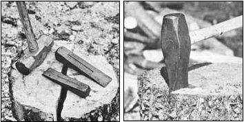

Chopping stovewood to size by hand may, at first glance, appear to be a ponderous, imprecise activity that requires little more than pure brute force. Nothing could be further from the truth, however. There is, instead, a distinct art to cracking logs open. The skilled woodsman or -woman who works with - rather than against - the rounds he or she is handling can split up a lot more fuel in a given time than can some muscle-bound ox who tries to club the woodpile to smithereens. In fact, a great many experienced splitters (both chore-laden homesteaders and briefcase-laden urbanites) have honed their skills to such a point that they look upon billet-busting as one of life's more enjoyable tasks.
And even if you've never split a stick, you can become an accomplished woodcracker yourself. To do so, you'll need a few commonly available tools, the how-to basics I'll share in this article, some rounds of ripe-for-the-opening wood - and practice.
The instruments most often used for working up wood by hand are the single-blade axe, a pair of three- to five-pound steel wedges, a middle-sized sledgehammer, and an eight-pound splitting maul. [EDITOR'S NOTE: Several manufacturers have devised variations on the standard hand tools - we've sized up a number of woodcracking aids in The Great Wood-Splitting Contest II!]
However, it isn't necessary to have all of these tools to begin work. I recommend starting out with a pair of wedges and that workhorse of the log-busting trade, the splitting maul (or "go-devil"). The blade of the latter implement can crack open many a billet, while the tool's back end can be used for driving wedges. (By the way, never use the butt of an axe for pounding - its thin head may crack!)
Probably the single most important wood-splitting rule is this: Always place your to-be-broken rounds on a short chopping block. Such a base will provide solid resistance to the blows, increasing your stroke's penetration and guaranteeing that when your maul breaks through the billet, the tool's blade will land in wood instead of slamming into dulling earth or stones.
Once you've set your piece of tree up on its chopping block, stand back with your arms extended and feet planted squarely apart. (And, for safety's sake, be sure to wear boots and sturdy long pants!) Then line up the go-devil over its intended target, wind 'er up and swing!
Now some folks go for pinpoint accuracy by lifting their mauls straight up overhead, while others feel they gain more power by swinging the implements back around their shoulders. And one person will let his or her top gripping hand slide up toward the splitter's head on the upswing, but another will keep both hands clenched together in a grip similar to that used by a golfer. You'll have to experiment until you decide just which technique is best for you.
No matter how you attack your billets, though, do try to let the weight of the maul do most of the work. In addition, be sure to hit the rounds flush: that is, with the go-devil's handle landing at a 90° angle to the standing log. (You will probably have to bend your knees slightly as you swing down to make a straight-on hit, but such a blow will definitely increase your splitting effectiveness - and help insure that, if your maul glances off to one side, the tool won't swing down and strike you in the leg!)
To develop accuracy, concentrate on aiming for as small a target as possible. And be optimistic when you swing. Don't visualize your tool striking the top of the round and bouncing back up, but consciously think it down through the wood!
A major element of efficient wood splitting is figuring out the best spots to strike. It's hard to go wrong if you try to cut on one of the small cracks (or checks) that radiate from the center of most billets. Such openings mark the lines along which the wood "wants" to come apart - so it's plain, laborsaving common sense to cooperate with that "desire."
It's often best (especially after you've struck a log once or twice and the crack begins to widen) to direct your stroke to the wood at the near side, rather than down the center, of the opening. That way, you reduce the chances that your maul will become irretrievably stuck, or that the tool's handle will run into some stubborn fibers when the head breaks through. (On unfortunate occasions when your maul does get stuck, you may find it easier to free the tool if you push down, not up, on the handle. But be careful, you can break the wooden stem by doing so!)
Sooner or later, of course, the force of your inevitable occasional missed swings will add up, and you'll find yourself replacing the go-devil's handle. The worst part of the task is removing the remaining bit of wood stuck inside the tool's head. That job may go more smoothly if you drill a few holes in the wooden fragment before you try to drive it out. [EDITOR'S NOTE: A few handle-preserving tips can be found in Down-Home Country Lore (November/December 1980).]
The grain of wood fibers flows in the same direction that the tree itself grew: from the ground up. I'm convinced wood splitting is easier when I stand each round upside down and split the wood in the same direction that it grew. You can readily discern which end of a log was originally higher if one tip is smaller, or if the piece has any branches (such offshoots always grow toward the sun).
I stick fast to my "ground up" rule, but I must admit that not all experienced wood splitters concern themselves with it. Instead, many simply attack the log end that has the most prominent checks or is farthest away from a large knot.
The vast majority of rounds will yield to a few well-placed blows of the go-devil. But you will occasionally encounter the bane of any wood splitter's labors - one of those ornery, mule-headed, cussed, tough-fibered, no-good, gnarl-grained chunks that just won't cooperate. And the true artistry to billet-breaking comes in judging the best tactics to use on such hard-nut-to-crack rounds.
If the log is simply too thick to succumb to a splitting maul's blows, you can often halve it by using your wedges. Set one "prying triangle" into a check with a few taps of the maul's backside (or use a sledgehammer or mallet), and then drive it in. If you're sure that the wedge will do the trick, knock it all the way down. But if the log looks stubborn, leave the head of the wedge poking out and start a second wood opener - either on the opposite side of the crack, or along the split that will have started down the log's side. Then, if the number two wedge fails, you can knock the first one free and drive it in along the side. With any luck, the wood will soon give way. (If you somehow do sink all your wedges irretrievably deep, you can use a homemade glut - or wooden wedge - to get them out.)
Another, often easier, way to handle a thick round is to whittle it down to size by slicing sections off the outside with your maul. After you've worked all the way around the perimeter of the billet once or twice, the center should be small enough to split open.
Big logs do take work to open up, but the two types that really elicit those unprintable-in-a-wholesome-magazine expletives from wood stockpilers are timbers with knots and crotches.
Some folks recommend tackling knots by trying to split straight through the center of the branch outgrowths, but I think it's easier - at least while you're halving the round - to avoid trouble by splitting at right angles to the maul-stopping sections.
Crotches can provide even less amusement for the log buster than do knots! When wrestling with one of those "pair o' pants" pieces, you might try splitting a section off the outside of each leg and then cracking the remaining V piece, from the bottom, along the line that goes through the heart of each leg. On the other hand, cutting the two halves apart with a chain saw - and then splitting each leg open - can be an effective worksaving technique. (Whatever you do, though, don't waste time trying to split the two legs apart at the crotch - it "just ain't likely" to work.)
Actually, wasting time and energy on any recalcitrant piece of wood is one of the best ways to make sure you have a miserable, frustrating time out at the woodpile and get little useful work done while you're there. As far as I'm concerned, when you find a piece that's not going to be reasonably cooperative, either cut the round up with a chain saw or toss the dang thing aside!
Who knows? Maybe you'll be able to use that chunk as an overnighter log in your own or a neighbor's fireplace. Perhaps the piece will be more "mauleable" if you try splitting it in the dead of winter (it's amazing how often hunks of tough wood will open quite easily when all the moisture inside is frozen! ). You may even find some creative use for the crooked tree section around the homestead. Just don't take its stubbornness as a personal challenge and wear out everything but your own wrath trying to break the billet down.
Let me sum up this article by providing three overall guidelines to help anyone master the craft of splitting wood by hand:
There's hardly a feeling in the world more satisfying than swinging a maul over your head on a clear, crisp day and watching it smoothly and cleanly cleave a round of firewood right in two. So head on out to that woodlot - and happy splitting!
|
 STAFF PHOTOS A sledge and wedges to handle big rounds (left), and the splitting maul (right). |
STAFF PHOTOS One way to retrieve a stuck wedge (left). Split on the checks (right). |
|